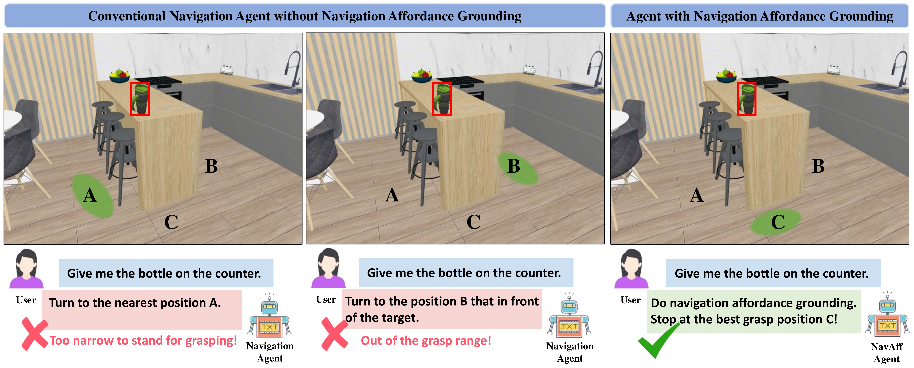
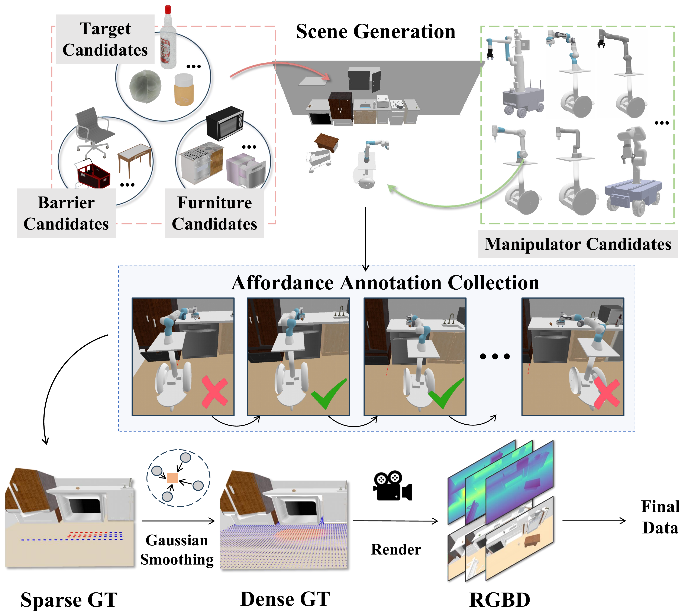

MoMa-Kitchen
A 100K+ Benchmark for Affordance-Grounded Last-Mile Navigation in Mobile Manipulation
Motivation

Conventional navigation methods typically prioritize reaching a target location but do not account for constraints affecting manipulation feasibility. Left Position A prioritizes proximity but is obstructed by chairs, preventing stable execution. Middle: Position B places the robot in a spacious and stable area for operation but beyond its effective reach. Right: Our approach, leveraging navigation affordance grounding, identifies Position C as the optimal stance, ensuring both reachability and task feasibility.
Project Overview
We present MoMa-Kitchen, a benchmark dataset with over 100k auto-generated samples featuring affordance-grounded manipulation positions and egocentric RGB-D data, and propose NavAff, a lightweight model that learns optimal navigation termination for seamless manipulation transitions. Our approach generalizes across diverse robotic platforms and arm configurations, addressing the critical gap between navigation proximity and manipulation readiness in mobile manipulation.
Contributions
- 1) We propose MoMa-Kitchen, the first large-scale dataset with over $100$k samples that bridges the gap between navigation and manipulation in mobile manipulation tasks by enabling models to optimize final positioning near target objects.
- 2) We develop a fully automated data collection pipeline -- including scene generation, affordance labeling, and object placement -- to simulate diverse real-world scenarios and enhance model generalizability.
- 3) We design a lightweight baseline model, NavAff that employs RGB-D and point cloud inputs for navigation affordance grounding, achieving promising results on the MoMa-Kitchen benchmark.
Dataset Generation

MoMa-Kitchen generates a floor affordance map to determine feasible navigation positions that enable successful manipulation in cluttered environments. It integrates RGB-D visual data and robot-specific parameters to label navigation affordances in diverse kitchen settings, collecting first-person view data and ground truth through mobile manipulators.
Data Generation Demos
We collect floor-level navigation affordance data using mobile manipulators with various robotic arms. For each target object, we define a semicircular affordance sampling area and attempt manipulations at sampled positions, recording success or failure.
Real World Demos
We validate our method in real-world experiments using a mobile manipulator equipped with a D435i camera. Object masks and depth images are obtained using Grounded-SAM and Depth Anything v2, respectively, to generate a global point cloud for affordance prediction. Results in kitchen scenarios show generalization from simulation to reality, demonstrating the robustness of our approach.